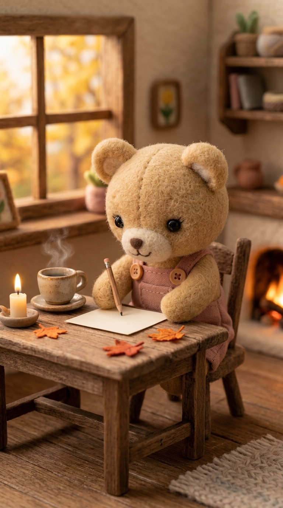

♡ Queridas familias:
Vivimos en un mundo que parece ir cada vez más deprisa. Las imágenes cambian constantemente, los sonidos compiten por nuestra atención y, a veces, hasta los momentos de entretenimiento parecen tener prisa.
En Mundo Peque · Con Calma queremos hacer las cosas de otra manera.
Hemos creado un pequeño universo habitado por personajes artesanales de fieltro, donde las historias suceden despacito y las cosas más sencillas se convierten en pequeñas aventuras.

Aquí, Berto puede pasar una tarde escuchando la lluvia. Hugo puede detenerse a recoger unas hojas de otoño. Mila puede preparar una receta con cariño, y Teo puede quedarse dormido mientras la chimenea ilumina suavemente su habitación.
No necesitamos que ocurran mil cosas para contar una historia bonita.

Creemos que también hay belleza en lo cotidiano, en observar, en imaginar y en disfrutar sin prisa.
Por eso, nuestros contenidos siguen un enfoque de baja estimulación audiovisual: movimientos suaves, escenas acogedoras, sonidos naturales y un ritmo tranquilo, evitando los estímulos innecesarios.
No buscamos captar la atención de los pequeños a cualquier precio. Queremos crear historias que puedan acompañar momentos compartidos en familia y despertar la curiosidad por las pequeñas cosas que nos rodean.
Y, sobre todo, nos gustaría que nuestras aventuras no terminaran cuando se apaga la pantalla.

Que después de ver a Hugo recoger hojas, apetezca salir a buscarlas. Que después de acompañar a Lola mientras dibuja, alguien quiera coger sus propios colores. Que una tarde de lluvia con Berto nos recuerde lo bonito que puede ser simplemente escuchar.

Porque el mundo real también está lleno de pequeñas maravillas.
Gracias por acompañarnos, por conocer a nuestros personajes y por permitirnos compartir un pedacito de este universo con vuestra familia.

Con mucho cariño,
Mundo Peque · Con Calma ♡
Pequeñas historias, grandes momentos de calma.
